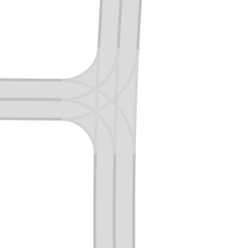
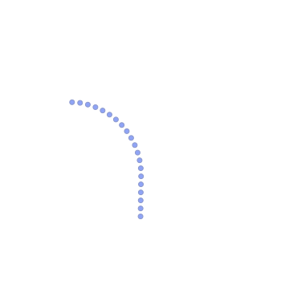
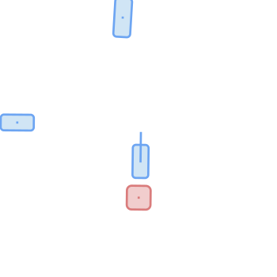
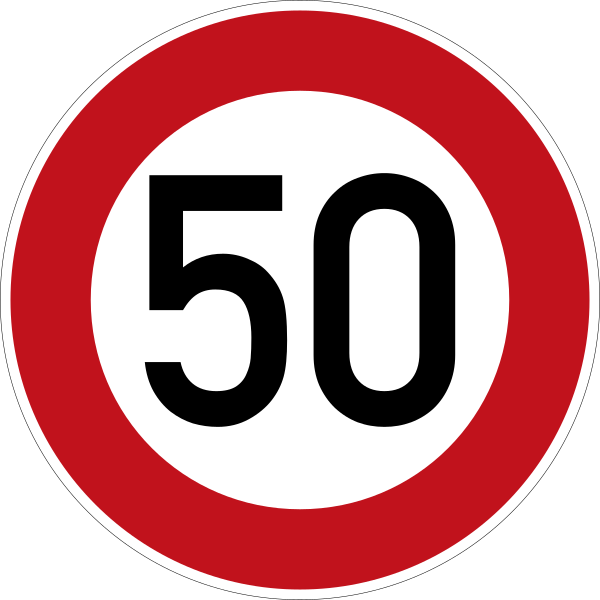
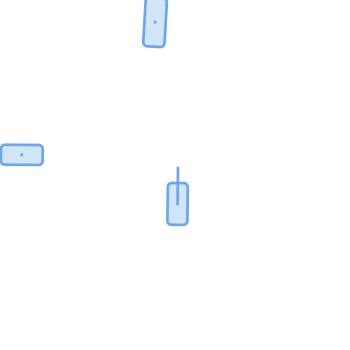
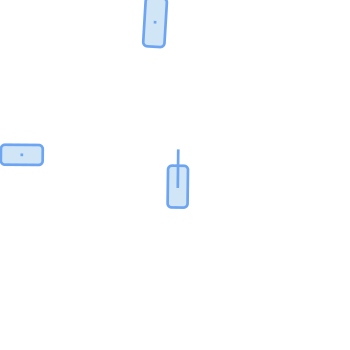
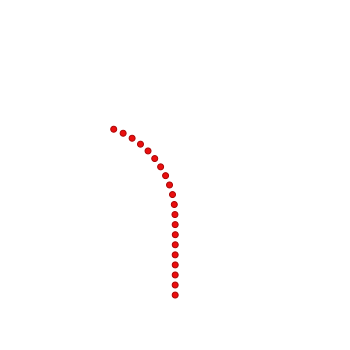
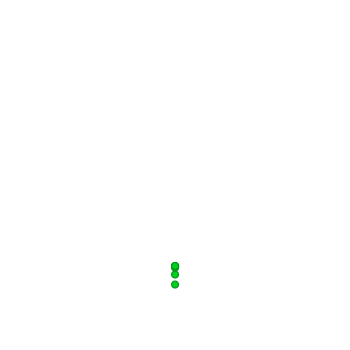

Project Page
PlanT 2.0 is a lightweight, object-centric planning transformer for CARLA. Its structured input enables controlled perturbations for failure analysis, while still delivering state-of-the-art closed-loop performance on CARLA Leaderboard 2.0 benchmarks.
Most recent work in autonomous driving has prioritized benchmark performance and methodological innovation over in-depth analysis of model failures, biases, and shortcut learning. PlanT 2.0 enables a systematic study of failures by using a structured, object-centric input that can be perturbed in a controlled way. We introduce upgrades to PlanT for CARLA Leaderboard 2.0 scenarios and achieve state-of-the-art results on Longest6 v2, Bench2Drive, and CARLA validation routes. Our analysis reveals failure modes linked to low obstacle diversity, rigid expert behavior, and overfitting to fixed trajectories, motivating a shift toward data-centric development.
Systematic identification of planning failure modes via targeted perturbations of object-level inputs.
Improved inputs and planning representations to tackle CARLA Leaderboard 2.0.
Code, models, and dataset are released to support reproducibility and future research on robustness.
PlanT 2.0 uses a sparse, object-based representation of the environment that is processed by a transformer backbone. This design allows the model to reason explicitly about interactions between relevant agents and map elements. A disentangled planning output is used, with separate predictions for lateral and longitudinal vehicle control. During training, the model additionally predicts the future states of surrounding objects as an auxiliary task.




Objects: Vehicles, pedestrians, static objects, emergency vehicles, stop signs, and traffic lights, each represented as oriented bounding boxes with velocity information.
Road layout: 64 m bird's-eye-view raster of the surrounding road network, encoded using a ResNet-18.
Route information: 20 route waypoints, embedded as a single token.
Speed limit: A learned embedding token representing the current speed limit.




Waypoints: 8 future waypoints sampled at 4 Hz, used for longitudinal control.
Path: 20 spatially equidistant path points (1 m spacing) used for lateral control.
Actor forecasting: As an auxiliary task, the future state of surrounding actors is predicted for the next timestep.
The model exploits recurring patterns and timing cues instead of learning causal decision-making.
Fixed expert trajectories restrict the learned action space, causing poor adaptation to new scenarios.
Small number of unique obstacles limits spatial reasoning and environmental understanding.
Download checkpoints from Hugging Face and run evaluation using the CARLA leaderboard evaluator.
We release the dataset used in the paper for training and analysis of object-centric planners.
@misc{gerstenecker2025plant20exposingbiases,
title={PlanT 2.0: Exposing Biases and Structural Flaws in Closed-Loop Driving},
author={Simon Gerstenecker and Andreas Geiger and Katrin Renz},
year={2025},
eprint={2511.07292},
archivePrefix={arXiv},
primaryClass={cs.RO},
url={https://arxiv.org/abs/2511.07292},
}